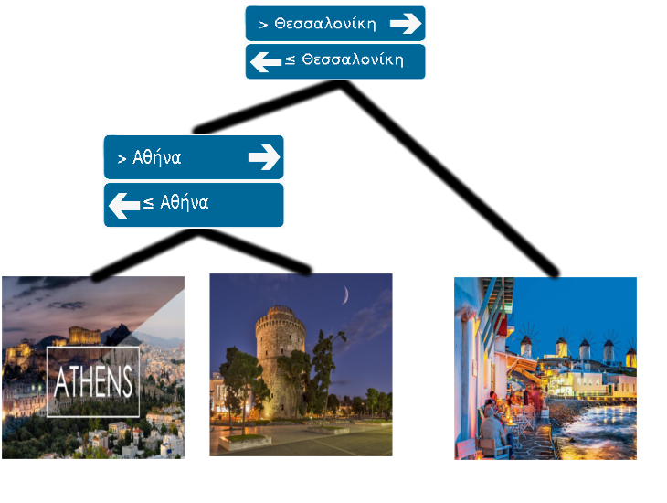
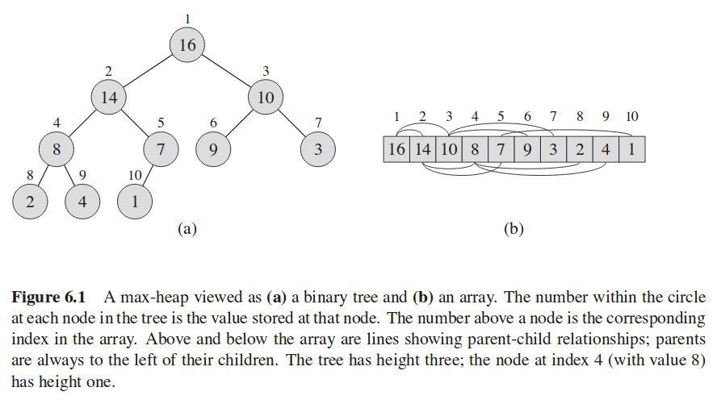

Copyright ©2018. All rights reserved. Created by CoDev
Έστω ότι θέλουμε να αποθηκεύσουμε σε ένα Binary Search Tree (BST) τρεις πόλεις: Αθήνα, Θεσσαλονίκη, Μύκονος. Όπως γνωρίζουμε, το δέντρο μας θα έμοιαζε κάπως έτσι:
Παρατηρούμε ότι κάποιες πόλεις (Αθήνα, Μύκονος) αποθηκεύθηκαν στα φύλλα, ενώ κάποιες άλλες (Θεσσαλονίκη) σε εσωτερικούς κόμβους. Έχουμε λοιπόν ένα Node-Oriented Tree, η πληροφορία του δηλαδή αποθηκεύεται στους κόμβους. Υπάρχει όμως και μια άλλη αναπαράσταση, τα Leaf-Oriented Trees, που η πληροφορία αποθηκεύεται μόνο στα φύλλα. Και τότε τι κρατάμε στους εσωτερικούς κόμβους; Απλές πινακίδες για να μας βοηθούν στην αναζήτηση: 
Βλέπουμε ότι η πληροφορία (οι πραγματικές πόλεις) αποθηκεύονται στα φύλλα, ενώ στους εσωτερικούς κόμβους έχουμε απλά βοηθητική πληροφορία. Για παράδειγμα, η πρώτη πινακίδα αντί για Θεσσαλονίκη θα μπορούσε να γράφει "ΙΙΙΙΙ" καθώς κι αυτό το κείμενο θα διαχώριζε στα αριστερά Αθήνα-Θεσσαλονίκη και δεξιά τη Μύκονο.
Η βασική ιδέα των Leaf-Oriented BSTs που μας απασχολούν είναι ότι αποφεύγουμε πλήρως το ζύγισμα του δέντρου. Αντί να εισάγουμε σιγά σιγά τα δεδομένα, το δέντρο θεωρείται χτισμένο εξαρχής, μοιράζοντας βέλτιστα (στη μέση) τα στοιχεία. Απλώς άλλα τα σημειώνουμε ως ενεργά και άλλα όχι. Έτσι, ακόμα και να έχουμε 1 στοιχείο μέσα στη δομή μας, ο χρόνος θα είναι πάλι λογαριθμικός. Αυτό στη θεωρία είναι κακό, για τους διαγωνισμούς όμως είναι ταχύτατο, τόσο στη συγγραφή όσο και στην εκτέλεση.
Ας θυμηθούμε τον τρόπο αποθήκευσης που είχαμε χρησιμοποιήσει και στις Heap (δε μας ενδιαφέρει η ίδια η Heap, μόνο το πώς την αποθηκεύαμε).
Η παρουσίαση εκτέλεσης (μαζί με κώδικα) για απάντηση σε ερωτήματα ελάχιστης τιμής δίνεται εδώ, και χρησιμοποίει το ίδιο ακριβώς τρικ αποθήκευσης της heap (θυμόμαστε αυτό). Παρακάτω θα αναλύσουμε την πολυπλοκότητα:
Προφανώς το update κοστίζει O(logN), αφού το ύψος του δέντρου είναι logN, και σε κάθε βήμα μετά από σταθερό αριθμό από operations στρίβει στο αριστερό ή στο δεξί παιδί. Τι γίνεται με τα query όμως, που μπορεί να σπάσουν και στα 2 παιδιά;
Θα δείξουμε πρώτα ότι τα εύκολα ερωτήματα κοστίζουν O(logN). Θα λέμε εύκολο ένα ερώτημα όταν ζητάει την ελάχιστη τιμή από την αρχή ως κάποια θέση. Έτσι αν είμαστε στη ρίζα [1,Ν], εύκολα είναι τα ερωτήματα [1,2], [1,5], κλπ, ενώ δύσκολα είναι τα [2,3], [2,4] κλπ. Αντίστοιχα αν είμαστε στον κόμβο [5,8], τότε τα εύκολα ερωτήματα είναι τα [5,7], [5,8] κλπ.
Γιατί λοιπόν τα εύκολα ερωτήματα κοστίζουν O(logN); Αφού ζητάνε την αρχή, θα πάμε σίγουρα στο αριστερό παιδί. Αν δεν πάμε στο δεξί, τότε είναι προφανές ότι δεν υπάρχει πρόβλημα. Αν πάμε και στο δεξί, τότε αφού θέλουμε και την αρχή και κάτι από το δεξί, άρα θέλουμε κι όλα τα ενδιάμεσα. Άρα θέλουμε ολόκληρο το αριστερό παιδί, του οποίου την απάντηση παίρνουμε απευθείας (Ο(1)), και κατόπιν θα συνεχίσουμε μόνο στο δεξί παιδί. Άρα κάθε φορά συνεχίζουμε πρακτικά σε ένα μόνο παιδί.
Συμμετρικά, και τα ερωτήματα που τελειώνουν στο τέλος του κόμβου είναι εύκολα. Τι γίνεται με τα γενικά ερωτήματα; Προχωρούνε σε ένα παιδί, μέχρι που κάποια στιγμή θα σπάσουν σε 2. Παρατηρούμε ότι όταν σπάσουν, έχουμε δύο εύκολα ερωτήματα! Το αριστερό τελειώνει στο τέλος, και το δεξί αρχίζει στην αρχή (αλλιώς δε θα έσπαγαν!). Επομένως ο χρόνος είναι περίπου 2*O(logN) = O(logN).
Για να καταλάβουμε καλύτερα τη δομή, μπορούμε να πειραματιστούμε με αυτή την εφαρμογή. Στην ανανέωση βάζουμε L=R. Στο επόμενο υποκεφάλαιο θα δούμε πώς να κάνουμε γενικά Range Updates με Lazy Propagation.
Ο πίνακάς μας πρέπει να είναι μεγέθους 4*Ν. Μέχρι το 2*Ν προκύπτει επειδή πέρα από τα Ν φύλλα έχουμε και τους Ν-1 εσωτερικούς κόμβους. Η υπόλοιπη διαφορά οφείλεται στην heap αναπαράστασή μας.
Αν δείτε τις διαφάνειες, η θέση του κόμβου [6,6] στον πίνακα είναι 24, δηλαδή ήδη πάνω από το 2*Ν=20. Αν σας αρκεί, το 4*Ν είναι πάντα αρκετό. Αν όχι, προσέξτε ότι η heap αναπαράσταση ´θεωρεί´ ότι το τελευταίο επίπεδο είναι γεμάτο. Ενώ εμείς πχ δε δίνουμε σε κανένα κόμβο την τιμή 18, και θα μπορούσε να ανατεθεί στον κόμβο [6,6], η heap αναπαράσταση φαντάζεται ότι οι κόμβοι [3,3], [4,4], [5,5] έχουν από δύο παιδιά, και σε αυτά τα υποθετικά παιδιά αναθέτει τις μικρές θέσεις μνήμης.
Έτσι μπορεί να έχουμε κάποιο παιδί στο τελευταίο επίπεδο που έχει μεγάλη διεύθυνση, όπως το [6,6]. Αφού όμως τα φύλλα είναι Ν, το τελευταίο επίπεδο έχει μέγεθος το πολύ 2*Ν, κι άρα το 4*Ν αρκεί για να δώσουμε διεύθυνση σε οποιοδήποτε κόμβο.
Επίσης άλλες υλοποιήσεις (όπως η ενδεικτική) διαλέγουν σωστά το παιδί (ή τα παιδιά) όπου πρέπει να κατέβει η αναδρομή. Άλλες πηγαίνουν και στα 2 παιδιά, κι απλώς επιστρέφουν αν το διάστημα του κόμβου είναι τελείως ξένο με το διάστημα του ερωτήματος. Διαλέξτε ό,τι σας ταιριάζει περισσότερο!